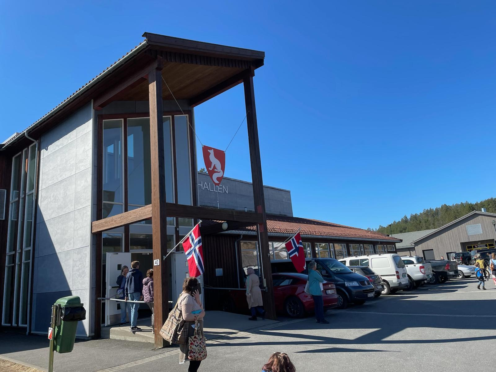
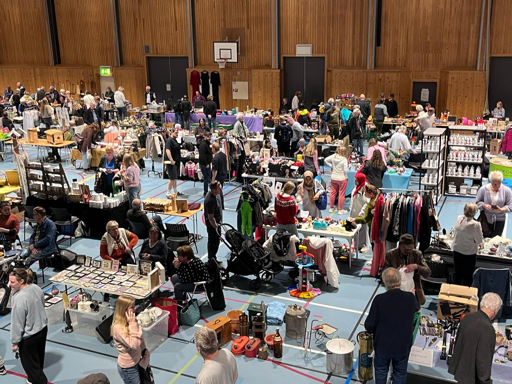
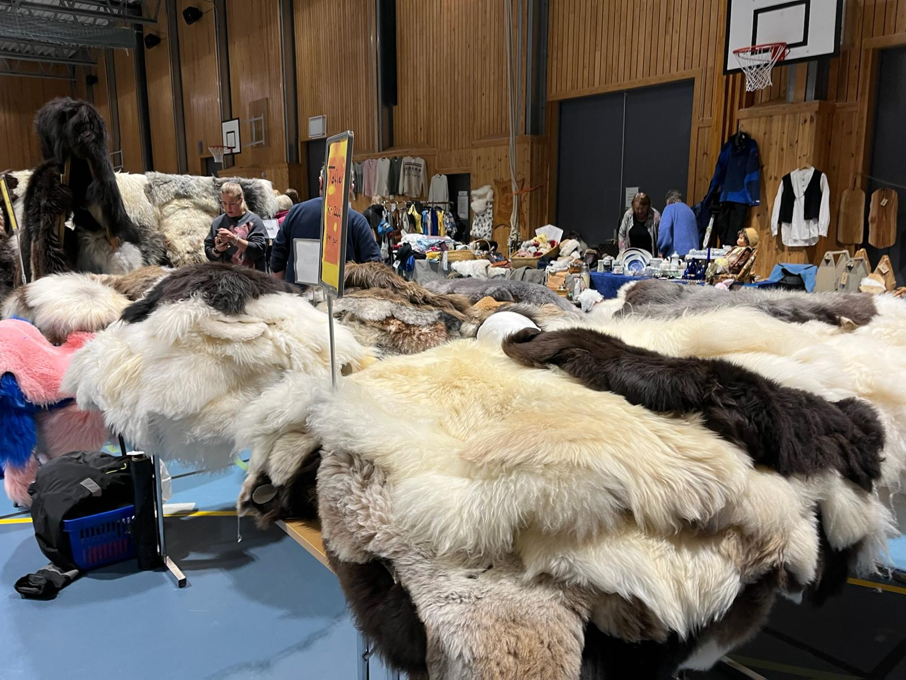
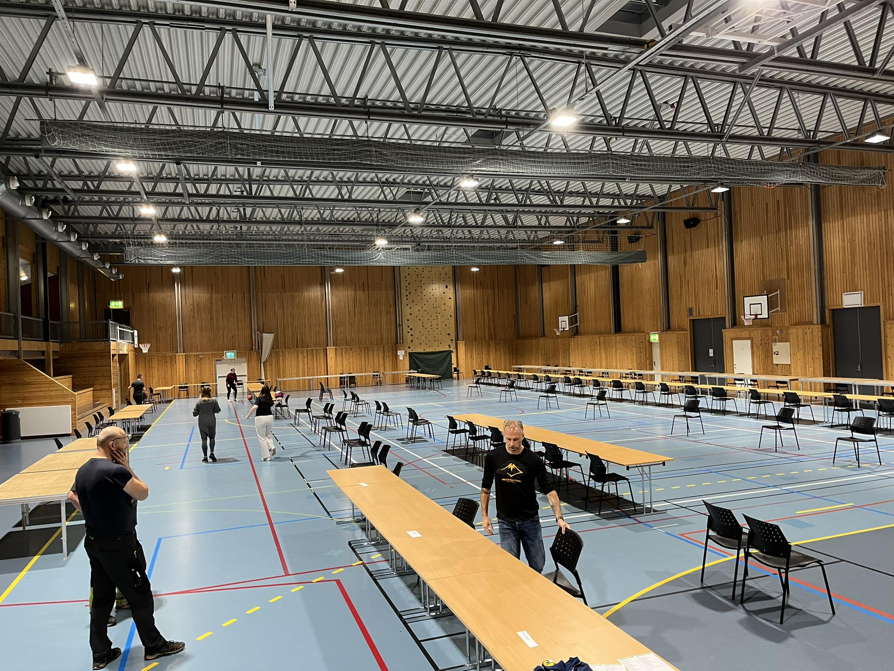
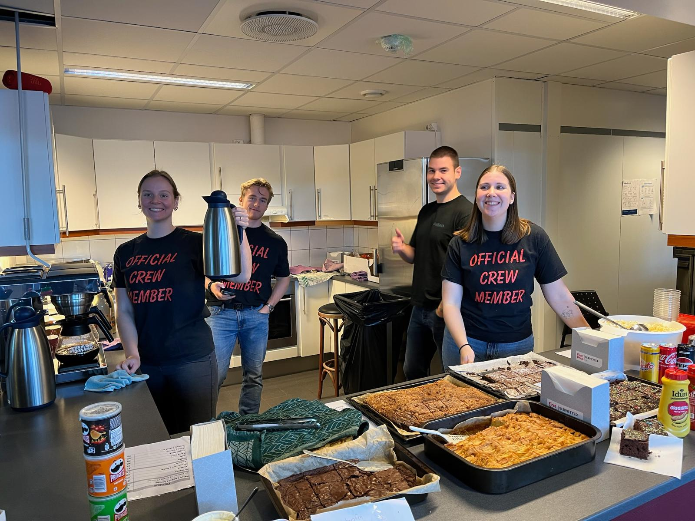

⭐ Om bruktmarked Vegårshei
Bruktmarked Vegårshei har vært arrangert siden 2017 og har etablert seg som et fast og populært bruktmarked.
Markedet arrangeres to ganger i året, én gang om våren og én gang om høsten, og finner sted innendørs i Vegårsheihallen.
Hver markedsdag samler rundt 100 stands med et bredt utvalg av brukte varer, håndlagde produkter og gjenbruksskatter.
Arrangementet har gratis inngang og parkering, og det tilbys kiosk med enkel servering.
Over årene har bruktmarkedet tiltrukket seg mange besøkende og blitt et viktig samlingspunkt for kjøp, salg og gjenbruk.
📅 Neste bruktmarked
lørdag 24. oktober 2026
🖼️ Bilder





ℹ️ Praktisk informasjon
Tidspunkt:
Bruktmarkedet arrangeres på en lørdag og er åpent fra kl. 10.00 til kl. 15.00.
Sted:
Arrangementet holdes innendørs i Vegårsheihallen.
Inngang:
Gratis inngang for alle besøkende.
Parkering:
Gratis parkering i tilknytning til hallen.
Stands og utvalg:
Markedet har rundt 100 stands med et variert utvalg av brukte varer og håndlagde produkter,
blant annet klær, møbler, interiør, leker og småting.
Servering:
Det er kiosk på området med salg av enkel mat og drikke, betaling med Vipps og/eller kontanter.
Betaling:
De fleste standholdere tar Vipps og/eller kontanter. Dette kan variere fra stand til stand.
📝 Påmelding for standholdere
Påmelding åpner omtrent to måneder før bruktmarkedet arrangeres. Da sendes det ut en SMS som varsler om at påmeldingen er åpnet.
Påmelding skjer ved å svare på SMS‑en, og plassen bekreftes når betalingen for standen er mottatt. Vi anbefaler å svare raskt, da markedet ofte er fullbooket allerede få dager etter at SMS‑en er sendt ut.
Har du tidligere mottatt SMS fra oss, vil du automatisk få ny SMS med neste bruktmarked.
Nedenfor kan du melde deg på for å motta SMS når påmelding åpener.
📍 Lokasjon
Vegårsheihallen. Molandsveien 40, 4985 Vegårshei, Aust-Agder
❓ Ofte stilte spørsmål
Finner du ikke svar her, kan du kontakte oss via skjemaet nedenfor.